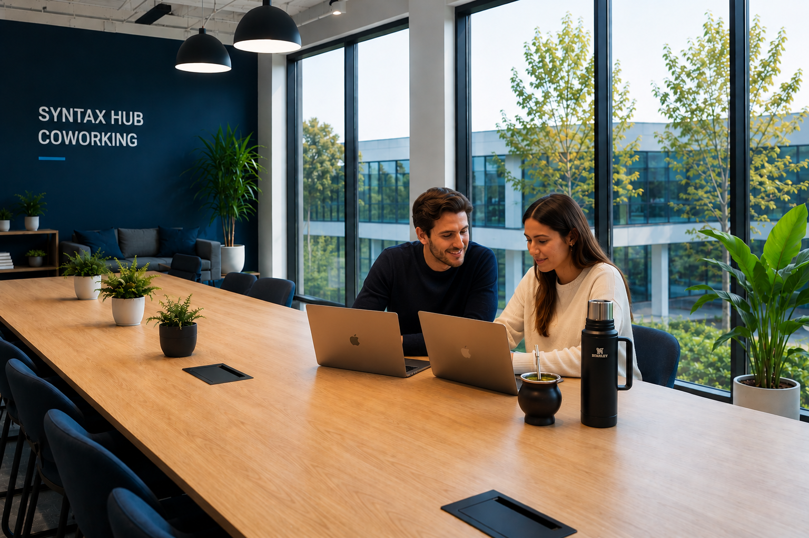
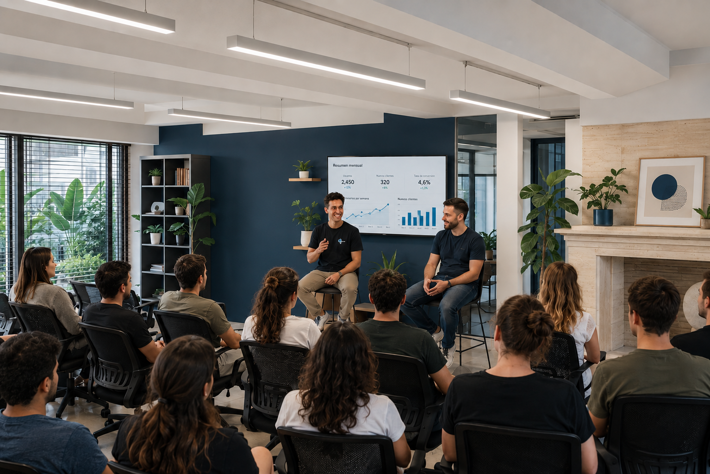

Somos un espacio de trabajo pensado para desarrolladores, equipos, emprendedores y empresas que necesitan un entorno serio, bien conectado y libre de distracciones.
Nuestra misión es ofrecer un espacio de trabajo profesional, moderno y con instalaciones de primer nivel, haciendo que las personas encuentren el entorno ideal para enfocarse y crecer. Contamos con salas de reuniones equipadas y espacios adaptados para cada necesidad, porque creemos que el lugar donde trabajás define la calidad de lo que construís.


Porque no somos solo una oficina con sillas y wifi. Entendemos lo que necesita un equipo técnico: conexión estable, silencio cuando hace falta y salas listas para una llamada importante.
Pero también sabemos que trabajar bien implica desconectarse un momento: contamos con espacios de esparcimiento, áreas de descanso y ambientes pensados para que el día tenga ritmo. Una comunidad que habla tu mismo idioma y un lugar donde quedarse más allá del horario laboral.
Veni a conocer Syntax Hub, tu nuevo espacio de coworking en Córdoba.